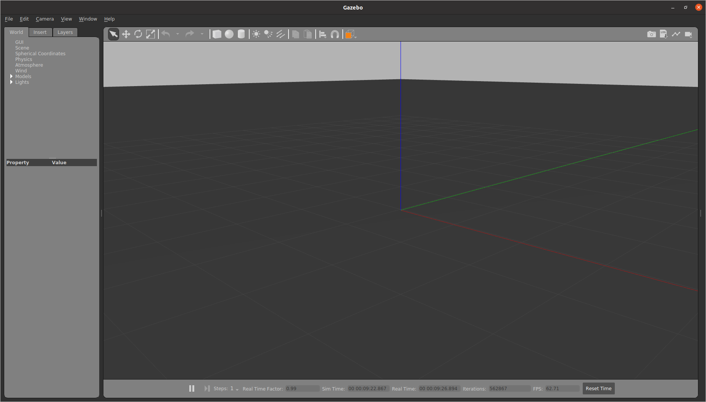
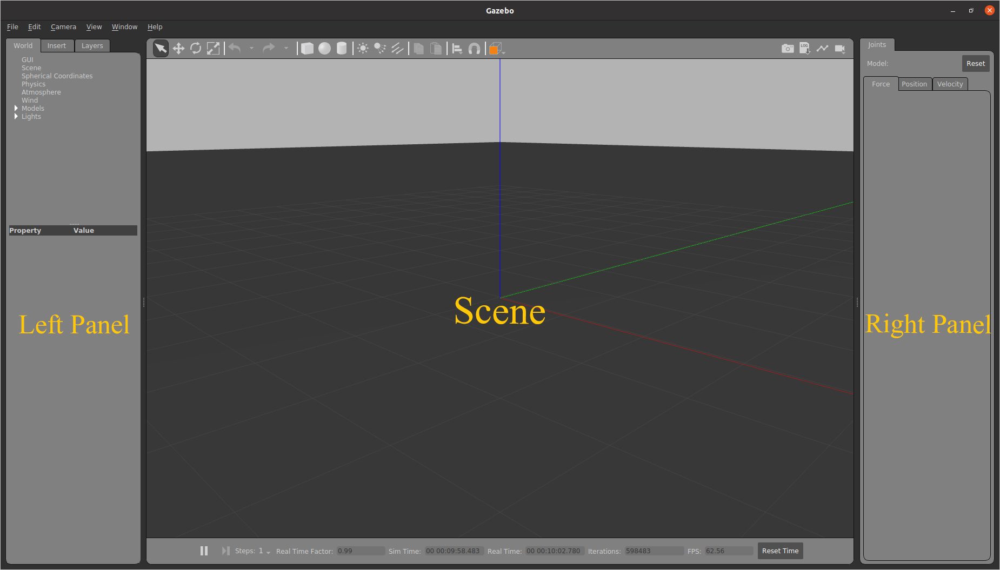
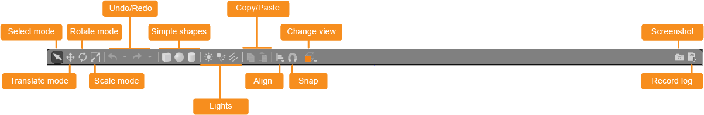
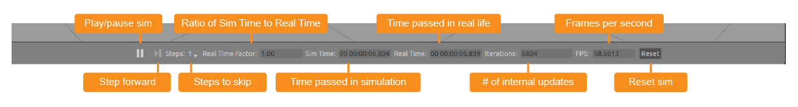
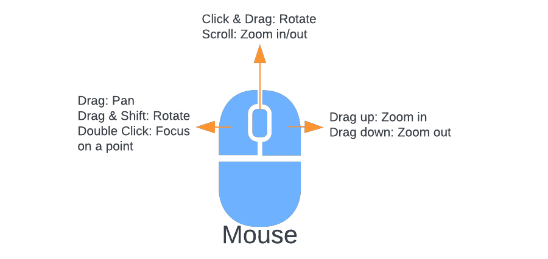
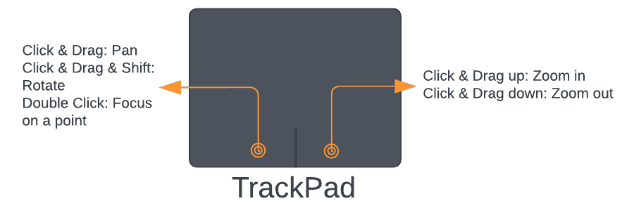
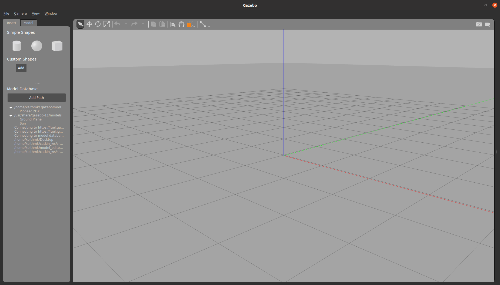

Gazebo Guide¶
This is a guide on how to use Gazebo, including launching the sub and viewing it inside Gazebo, how Gazebo can be controlled and manipulated, how to use Gazebo to make world files, and where you can find more info on Gazebo.
Brief Introduction¶
Gazebo is an open-source 3D dynamic simulator, that allows us to design, model, and test robots and their behavior in a virtual world. Similar to game engines like Unity, Gazebo takes in scripts and models and performs physics simulations on them. While it is similar, Gazebo offers physics simulations at a higher level of fidelity, a suite of sensors, and interfaces for both users and programs.
There are many versions of Gazebo, but this guide was written for Gazebo Classic 11 as this is the version of Gazebo currently being used at MIL.
Running Gazebo¶
There are many ways run Gazebo.
Click the “Show Applications” button on Ubuntu (the apps button located in the bottom left corner). Then search for the Gazebo Icon and press that icon to open Gazebo.
You can press Alt + F2 (or Alt+Fn+F2) to bring up the “Run a Command” window. Then type “gazebo” and press Enter to open Gazebo.
You can also open a terminal and type “gazebo” and it will open Gazebo.
To launch Gazebo will all the necessary files for simulating Subjugator, follow these steps:
Open a terminal window and execute the following command. This command uses ROS to start all the relevant ROS nodes and to load the world file for subjugator. This also starts a Gazebo Sever.
roslaunch subjugator_launch gazebo.launch --screen
Note
--screenforces all ROS node output to the screen. It is used for debugging.Then in another terminal window run this command to start the Gazebo graphical client, which connects to the Gazebo Sever.
gazebogui
Then in another terminal window run this command and then press Shift-C to unkill the sub to allow movement.
amonitor kill
Execute the following command to start a specific mission, replacing “StartGate2022” with the name of the desired mission:
mission run StartGate2022
How to use Gazebo¶
User Interface¶
When you launch Gazebo you will be greeted by its user interface.

The Gazebo interface consists of three main sections: The Left Panel, the Scene, and the Right Panel. By default the Right Panel is hidden. This is because we do not have anything selected. To show the right panel you can always Click and drag the bar on the right to open it.

Left Panel¶
The Left Panel has three tabs, each with different features. You can see these tabs at the top of the Left Panel. You can click on them to switch between them. The tabs are:
World Tab¶
The World Tab displays the models that are currently in the scene. Within this tab, you can view and modify various model parameters, like their pose (their position and rotation). Additionally, you can expand the GUI option to adjust the camera view angle by modifying the camera pose.
Insert Tab¶
The Insert Tab allows you to add new models (objects) to the Gazebo simulation. Here, you will find a list of file paths where your models are saved. To view the model list, click on the arrow located on the left side of each path to expand the folder. Select the desired model and click again in the scene to place it.
Layers Tab¶
The Layers tab organizes and displays different visualization groups within the simulation. Layers can contain one or more models, and enabling or disabling a layer will show or hide all the models within it. While not mandatory, layers can be helpful for organizing your simulation. Note that this tab may be empty if no layers are defined.
To define a layer, you will need to edit a model’s SDF file. To add an
object’s visuals to a layer you will need to add a <meta> tag for information
and then a <layer> tag with the layer number under each <visual> tag. Below
is an example:
<visual name='visual_0'>
<meta>
<layer>0</layer>
</meta>
...
</visual>
Scene¶
The Scene is the main window where objects are animated, and you interact with the environment. Two toolbars are available:
The Upper Toolbar¶
The Upper Toolbar consists of various buttons that allow you to select, move, rotate, and scale objects. It also provides options to create simple shapes, as well as copy and paste objects.

The Bottom Toolbar¶
The Bottom Toolbar displays information about the simulation time and its relationship to real time. It helps you track the progress of your simulation.

Right Panel¶
The Right Panel is used to interact with the mobile parts (joints) of a selected model. It provides controls and settings specific to manipulating the joints of a model.
Mouse¶
It is recommended that you use a mouse when using Gazebo. Below is a diagram showing all the mouse controls.

However, if you want to use a trackpad you can. Below are the controls for the trackpad:

How to Create Models¶
The structure for most models in Gazebo is that the model is a folder that contains a .config file, .SDF file(s), and .dae or .stl file(s). The config file contains meta information about the model. The .SDF file contains important simulation information like model definitions, the model’s positioning, its physical properties, etc. The .dae or .stl files contain 3D mesh information. When creating a model it’s recommended that you have all these components.
Model Editor¶
You can use the Model Editor to create simple models all within Gazebo, but for more complex models you will want to create/write your own SDF files and .dae files.
To enter the Model Editor, click on Edit in the menu bar and select Model Editor.
The Model Editor Interface looks similar to the regular Gazebo UI with some slight changes. The left panel and the top toolbar have been changed to contain only buttons and features for editing and creating parts of a model. The bottom toolbar is now hidden as the simulation is paused.

When entering the Model Editor all other models will turn white. This can make it hard to see the model you are currently working on if you have a lot of models in your scene. So it may be easier to open a blank Gazebo world and create the model using the Model Editor there. Then when you exit the Model Editor it will ask you to save the model. This will save the model as a folder on your computer. Then you can go back to the original world and insert this model, by going to the insert tab (note this is the regular insert tab, not the one in the model editor) and adding that model folder’s file path.
Note
When inserting a model, make sure that the file path you pick is the path to the parent directory. This directory contains the model folder you want to insert. Do not put the path to the model folder. Often this parent directory will contain all the models you want to use. The file hierarchy might look like this: where models is the parent directory and contains the models model1 and buoys.
models/
├── model_1/
│ ├── model.config
│ ├── model1.sdf
│ ├── model1.dae
│ └── ...
├── buoys/
│ ├── model.config
│ ├── green.sdf
│ ├── red.sdf
│ └── ...
Insert Tab¶
The Insert Tab allows you to add new parts, including links and models, to your model. You have two options for inserting shapes (links):
Simple Shapes: Click on the desired shape in the left panel and then click again in the scene to place it.
Custom Shapes: You can add COLLADA (.dae), 3D Systems (.stl), Wavefront (.obj), and W3C SVG (.svg) files as custom shapes. Create these shapes using 3D modeling software like Blender.
You can also insert other models into your model as nested models. These models can be obtained from the Gazebo Model Database (http://gazebosim.org/models/), which should be listed as one of your file paths under Model Databases. For example, if you need a depth sensor, you can add a depth sensor model from the database to your model.
Model Tab¶
The Model Tab displays the settings for the model you are creating. Here, you can change the model’s name and modify its basic parameters. Additionally, you can add plugins to give your model functionality here as well.
Placing Shapes¶
Once you insert a shape, you can use the toolbar to move, rotate, and scale it. For finer control, you can double-click the shape or right-click and select “Open Link Inspector” to access the link inspector. In the link inspector, you can modify the shape’s position, rotation, and scale to achieve the desired configuration. Make sure to adjust the scale in both the Visual and Collision tabs.
Adding Joints¶
To constrain the motion between shapes, you can add joints. Follow these steps:
Click on the joint icon in the toolbar (a line connecting two points).
In the Joint Creation Window, select the parent and child links (shapes) of the joint.
Select the type of joint you need in the Joint Types section near the top of the window.
Select the joint axis. Some joints do not have an axis.
Align the link (shape). Use the align links section to align the parent and the child with each other.
Adding a Plugin¶
To control your model, you need to create a plugin. You can do this in the Model Tab by specifying the necessary details for the plugin.
You can find more information on how to create your own custom plugins here.
Model Creation Workflow Example¶
To illustrate the model creation process, let’s consider creating a car model using Blender:
Create .dae files for the wheels, chassis, and other parts in Blender.
Insert these shapes into the Model Editor.
Use the toolbar and link inspector to position each shape precisely.
Add joints between the shapes to enable motion constraints.
Finally, create a plugin to control the model’s behavior.
World File¶
A World in Gazebo is used to describe the collection of robots and objects, and global parameters like the sky, ambient light, and physics properties. A World is the entire virtual environment that you have been working in. The World stores important information like where all the models are, their properties, and important global properties.
You can save the World file by selecting File and Save World As.
Note
When using roslaunch to start Gazebo, it is crucial to update the World file
if you make any changes to the simulation environment. At MIL, there is a
dedicated worlds folder where Gazebo World files are saved. When you update
a World file, ensure that you replace the old file in this folder. Failing
to do so will result in the continued use of the old World file when
launching Gazebo using roslaunch.
More Info¶
If you ever need more information on how any aspect of Gazebo works or how to use ROS with Gazebo you can check out the official Gazebo Documentation here. Some of the images used in this guide are sourced from here and we are grateful to the creators for their exceptional work, which has been instrumental in writing this guide.